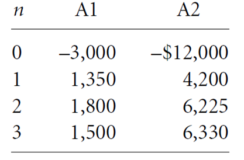

← Back to Index
Example 49 (Slide 173)
A pilot wants to start a private company to airlift goods to the Commonwealth of
Independent States (formerly the U.S.S.R.) during their transition to a free-market
economy. To economize the start-up business, The pilot decides to purchase only one
plane
and
fly
it
himself.
The
pilot
has
two
mutually
exclusive
options:
an old aircraft (A1) or a new jet (A2) with higher purchase costs, but higher revenues
as well because of its larger payload. In either case, the pilot expects to fold up business in
3 years because of competition from larger companies. The cash flows for the two
mutually exclusive alternatives are given in thousand dollars:
Assuming
that
there
is
no
do-nothing
alternative,
which
project
would
be selected at MARR of 10%?
173
Two Mutually Exclusive Alternatives
Example
